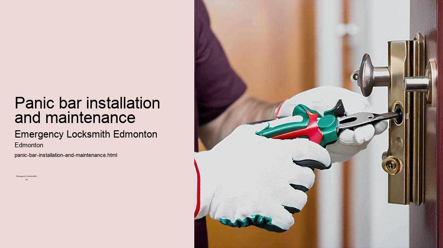

News
24/7 Emergency Locksmith Services
24/7 Emergency Locksmith Services
Emergency Locksmith Services
Residential lockout assistance
Automotive lockout services
Broken key extraction
Emergency lock repair and replacement
Commercial Locksmith Solutions in Edmonton
Commercial Locksmith Solutions in Edmonton
Highsecurity lock installations
Master key systems and rekeying services
Access control system integration
Panic bar installation and maintenance
Residential Locksmith Services in Edmonton
Residential Locksmith Services in Edmonton
Home lockout response
Rekeying existing locks for homes
Installation of new locks and deadbolts
Repairing or replacing residential locks
Automotive Locksmith Services in Edmonton
Automotive Locksmith Services in Edmonton
Car key duplication and replacement
Transponder key programming
Ignition repair and replacement services
Vehicle trunk opening
About Us

Panic bar installation and maintenance
Emergency lockout service Edmonton
Panic bars, also known as crash bars or push bars, are an essential safety feature commonly found on emergency exit doors in public and commercial buildings.
Residential Locksmith Services in Edmonton
.
Fast response locksmith Edmonton
These devices allow for quick and easy egress from a building during an emergency by simply pushing on a horizontal bar which releases the door latch mechanism. As such, their proper installation and maintenance are critical to ensure that they function correctly when needed.
Installation of panic bars requires precision and adherence to specific codes and standards, such as those outlined by the National Fire Protection Association (NFPA). Firstly, it is crucial to choose the right panic bar for the specific type of door and its usage. There are various models available that cater to different needs, including fire-rated panic bars designed for use on fire doors.
The installation process begins with accurately measuring the door to ensure that the panic bar fits properly.
Biometric lock services Edmonton
The correct positioning of the bar is typically between 34 and 48 inches above the floor level to comply with accessibility standards such as ADA requirements in the United States.
File cabinet locks Edmonton
Once positioned properly, mounting plates or brackets are installed onto the door using screws or bolts provided by the manufacturer.
Next comes attaching the main assembly of the panic bar onto these mounts while ensuring it aligns correctly with both them and any pre-drilled holes in the door.
Broken key extraction Edmonton
This step is followed by installing end caps if necessary, connecting rods or cables if dealing with vertical rod configurations, and finally securing all components tightly so there's no wobble or give when operating.
After installation comes testing: this involves checking that the door opens easily from inside without any resistance when pressure is applied to the panic bar.
24-hour locksmith Edmonton
From outside, entry should be restricted unless a compatible external unlocking device like a key lock or keypad has been installed alongside it.
Maintenance of panic bars is equally important as their installation because over time components can wear out or become damaged through heavy use. Regular inspection schedules should be established based on frequency of use and exposure to environmental factors such as humidity which could accelerate corrosion processes affecting metal parts.
During maintenance checks:
- Examine all moving parts including latches, springs, and hinges for signs of wear or damage.
- Ensure that all fixing screws and bolts are tightened securely.
- Lubricate moving components with a silicone-based spray lubricant to keep movement smooth – avoid oil-based products which can attract dirt.
- Test functionality by opening from both inside and outside (if applicable).
- Check alignment - misalignment may prevent proper functioning during emergencies.
- Look over any external locking mechanisms linked up with your panic hardware; these too need regular servicing.
If problems are detected during routine inspections they must be addressed immediately; this might mean adjusting misaligned parts, replacing worn components like screws or springs, up until more serious interventions requiring professional assistance.
Lastly but importantly is documentation: keeping records of installations along with dates of subsequent maintenance activities helps track performance over time while providing valuable information should warranty claims arise down line due equipment failure related issues stemming defective products poor craftsmanship at initial install stage itself.
Emergency lockout service Edmonton
In conclusion:
Properly installed maintained panic bars play vital role ensuring safe timely evacuation occupants from buildings cases emergencies hence importance cannot overstated meticulous attention detail required every step way—from selection through execution periodic upkeep—ensure they stand ready perform duties whenever called upon do so.Failure neglect these critical elements not only jeopardizes safety but may result legal repercussions building owners managers fail meet mandatory safety regulations put place protect public welfare.Above all vigilance care taken toward this seemingly simple yet life-saving apparatus epitomizes commitment safeguarding human lives adversity strikes unexpectedly.
Check our other pages :
Highsecurity lock installations
Repairing or replacing residential locks
Vehicle trunk opening
Emergency Locksmith Services
Home lockout response
Frequently Asked Questions
What is a panic bar, and why would I need one installed by an emergency locksmith in Edmonton?
A panic bar, also known as a crash bar or push bar, is a type of door hardware used for quick and safe egress in emergencies. It allows doors to be easily opened by pushing on a horizontal bar, even under pressure from a crowd. In Edmonton, you might need one installed to comply with safety codes for public buildings or to enhance the security and safety of occupants in commercial spaces.
How often does a panic bar require maintenance to ensure proper functioning?
Panic bars should typically receive maintenance at least once a year; however, high-traffic areas may require more frequent checks. Regular maintenance ensures that the mechanism operates smoothly and remains reliable during emergencies. An emergency locksmith can assess and service panic bars to keep them in optimal condition.
Can an emergency locksmith in Edmonton help if my panic bar is not functioning correctly outside of regular business hours?
Yes, an emergency locksmith in Edmonton can provide 24/7 assistance for urgent situations where your panic bar is not functioning correctly. This service ensures that your property remains secure and compliant with safety regulations at all times.
What should I consider when choosing a panic bar for installation by an emergency locksmith?
When selecting a panic bar for installation, consider the type of door (wooden, metal, glass), the width of the exit route, compliance with local building codes and ADA guidelines, ease of use, durability against heavy usage, compatibility with existing alarm systems if necessary, and whether it supports keyed entry for security personnel. An experienced locksmith can offer advice tailored to your specific needs and premises in Edmonton.